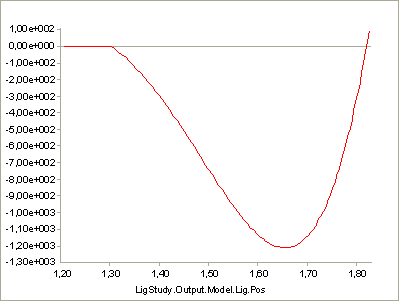
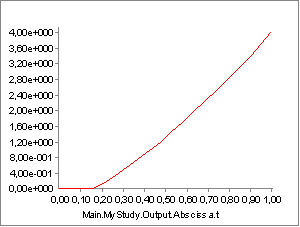

Lesson 7: Ligaments#
Ligaments are passive structures that connect articulating bones and keep joints assembled. Mechanically they are much like muscles but with no active contractile element. Ligaments only provide forces when they are stretched by the relative movement of the bones they connect.
This tutorial demonstrates how to define, control, and calibrate
ligaments. We need a model to work on. Please download and save the
model Demo.Ligament.any. Once you
have stored it on your hard disk, load it into the AnyBody Modeling
System and run the InitialConditions operation.

As you can see, the model is very simple. The blue structure is an “arm” that extends from the center of the yellow Ground reference frame. It is hinged at the Ground’s origin, and a driver bends it downwards. With the movement, the red ligament is stretched, and a force builds up in it. Try running the InverseDynamics operation. You will see the arm move, and you can subsequently open a Chart View to investigate the results:

As you can see, the ligament force builds up from nothing to about -2000 N as it is stretched. The value is negative by convention because it works in the opposite direction of the stretching. Notice that the graph has an initial flat part. This is because force does not build up until the ligament is stretched beyond its slack length, L0.
Basic Mathematical Behavior#
It looks like the force development is slightly nonlinear. This would make sense because ligament elasticity is generally nonlinear, but in this case it just shows that the abscissa is not the ligament length but rather an artificial “time” that is proportional to the joint angle.
In the Chart View you can plot any output data against each other. Let’s select instead of time the ligament length. Click the “Out” button, and the field containing the abscissa becomes white. You can now type LigStudy.Output.Model.Lig.Pos” in the abscissa field:

That’s better. Now the elasticity of the ligament is completely linear over the slack length. Let us take a look at the definition of the ligament model:
AnyLigamentModelPol LigModel = {
L0 = 1.30; // Slack length
eps1 = 0.2; // Strain where F1 is valid
F1 = 1000; // Force in the ligament at strain eps1
};
As you can see, we have only defined three properties. L0 is the slack length. The ligament is not stretched until its length goes beyond L0, so its strain is zero at L0. When the ligament is stretched, it also builds up a force. The rate of force development with stretching can be thought of as the stiffness of the ligament, and it is defined as the pair (eps1,F1), where F1 is the force in the ligament at strain eps1. Why do we choose to work with strain here rather than absolute length change? The reason is that ligaments are rather stiff structures, so small length changes can cause large forces, and it is therefore necessary that the slack length fits the model precisely. This length will usually have to be tuned to size changes of the body model. When we work with strain, the stiffness becomes a more generic property of the ligament and is independent of the length it gets calibrated to.
The three parameters we have defined leave room for no more than a linearly elastic behavior with a slack length. Ligament elasticity is generally not linear, so we need something extra to be able to specify nonlinear behavior. The mathematical background for the AnyLigamentModelPol is that it takes the form:
\(F = c_0 + c_1 \epsilon + c_2 \epsilon^2 + c_4 \epsilon^4\)
As you can see, it is a fourth order polynomial with the third order term missing. The 0’th order coefficient accounts for the slack length, and the first order coefficient accounts for the slope when the model is linear. In the presence of the nonlinear terms it becomes very difficult to interpret the significance of each term. For this reason, the nonlinearity in the model is defined by two parameters with an easier interpretation than the above-mentioned \(c_2\) and \(c_4\).
These two parameters are named a0 and a1, respectively. The first parameter, a0, defines the slope of the curve at slack length. If you study the curve above, you can see that it has a sharp kink at the slack length. It changes abruptly from zero slope to the nominal slope given by (eps1,F1). The default value of a0 is 1, and this corresponds to the slope right after the kink being defined entirely by (eps1,F1). In other words, the curve is pointing directly at the point (eps1,F1). In fact, the significance of the a0 is that it interpolates the slope between zero (for a0 = 0) and the linear slope you see in the curve above for a0 = 1. Try inserting the following:
AnyLigamentModelPol LigModel = {
L0 = 1.30; // Slack length
eps1 = 0.2; // Strain where F1 is valid
F1 = 1000; // Force in the ligament at strain eps1
a0 = 0.0;
};
Subsequently reload the model, run InverseDynamics, and plot the ligament force again. You will see the following:

The specification has created a continuous slope of 0 where the curve previously had a kink. Notice that the curve converges back to the “nominal” slope given by the two points (L0,0) and (eps1,F1)
If you try the following:
AnyLigamentModelPol LigModel = {
L0 = 1.30; // Slack length
eps1 = 0.2; // Strain where F1 is valid
F1 = 1000; // Force in the ligament at strain eps1
a0 = 0.5;
};
then you get something in between, as the following curve:

The significance of a1 is much the same, except it has its effect at the point (eps1,F1) rather than at (L0,0). If, for instance you insert
AnyLigamentModelPol LigModel = {
L0 = 1.30; // Slack length
eps1 = 0.2; // Strain where F1 is valid
F1 = 1000; // Force in the ligament at strain eps1
a0 = 0.5;
a1 = 0.0;
};
then you will get a curve that attains zero slope at (eps1,F1):

So, a1 = 0.0 corresponds to zero slope, and the default value of a1 = 1.0 corresponds to the slope given by the values of L0, eps1, and F1. You can similarly increase the slopes by increasing a1:

Unlike normal fourth order polynomials, these curves will continue predictably with no oscillation for as long as desired after (eps1,F1). The reason for this behavior is the default setting of the parameter
LinRegionOnOff = On
which causes the curve to continue a linear behavior after (eps1,F1). You can, however, obtain the clean fourth order polynomial behavior as you like by switching this setting off:
AnyLigamentModelPol LigModel = {
L0 = 1.30; // Slack length
eps1 = 0.2; // Strain where F1 is valid
F1 = 1000; // Force in the ligament at strain eps1
a0 = 0.5;
a1 = 1.0;
LinRegionOnOff = Off;
};

Clearly, this causes the curve to diverge after (eps1,F1), which is typical for higher order polynomials. Unless you have some special reason to prefer the pure fourth-order behavior, we recommend that you leave LinRegionOnOff = On.
Calibration
Most ligaments in the body are rather stiff structures in which the force builds up quickly when they are stretched beyond the slack length. This means that a small error in slack length specification could lead to a large error in computed ligament force. It therefore becomes crucial that the ligaments fit the other parts of the model exactly.
The easiest way to determine ligament slack lengths is by means of joint angles. For most joints where ligaments play an important role, it is obvious in which position of the joint the ligament becomes taut. Therefore, ligaments are calibrated just like muscles by positioning the joints in question and letting the system automatically change L0 of each ligament to the length in that position.
Lets try to calibrate our ligament. The first thing we must do is to create a Calibration Study:
AnyBodyCalibrationStudy LigCali = {
AnyFolder &Model = .LigModel;
nStep = 1;
// This driver puts the joint into the calibration position
AnyKinEqSimpleDriver Position = {
DriverPos = {-pi/4};
DriverVel = {0.0};
AnyRevoluteJoint &Jnt = Main.LigModel.Joint;
};
};
Notice the driver in the study. It positions the joint at the angle of -pi/4. This becomes the position in which the ligament has its slack length. Try loading the model and then browse your way through the tree to the L0 property of the ligament model:

Double-click it, and its value is shown in the Object Description window. You should find a value of
Main.LigModel.LigModel.L0 = 1.300000;
This is the slack length of the ligament at load time as defined in the ligament model. Now, run the LigCali.LigamentLengthAdjustment operation, and subsequently double-click the L0 property again. Now you will see a value of
Main.LigModel.LigModel.L0 = 1.573132;
The system has extended the ligament length a bit to fit the joint angle of -pi/4. Run the InverseDynamics study again, and see the influence of the increased slack length:

You can find the final version of the ligament demo file
here.